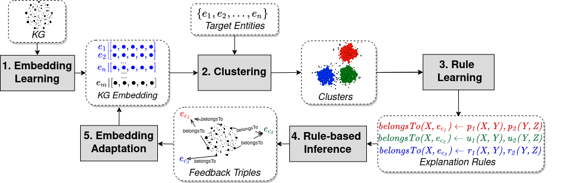
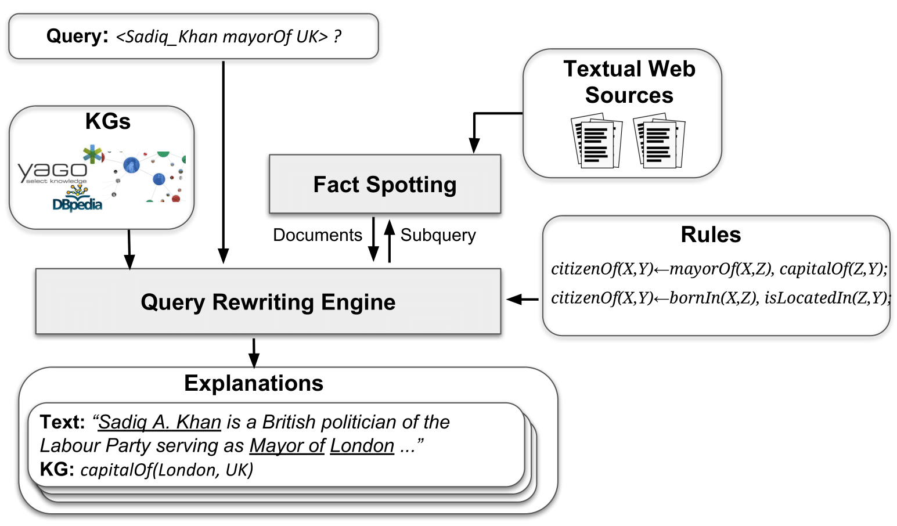
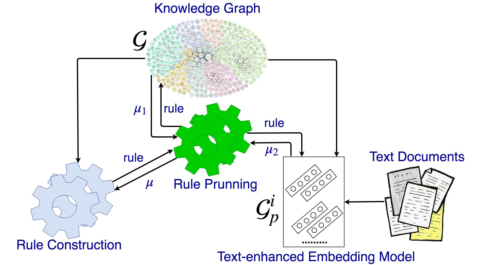
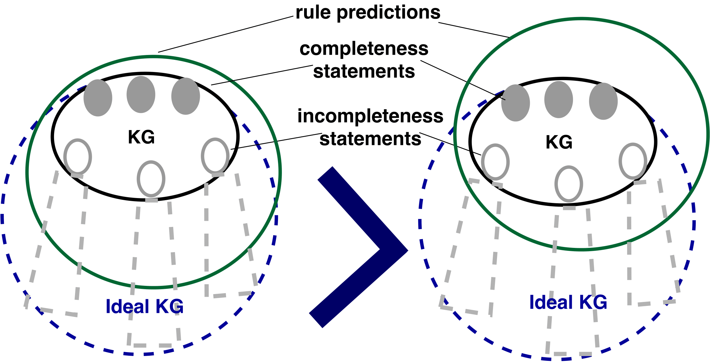
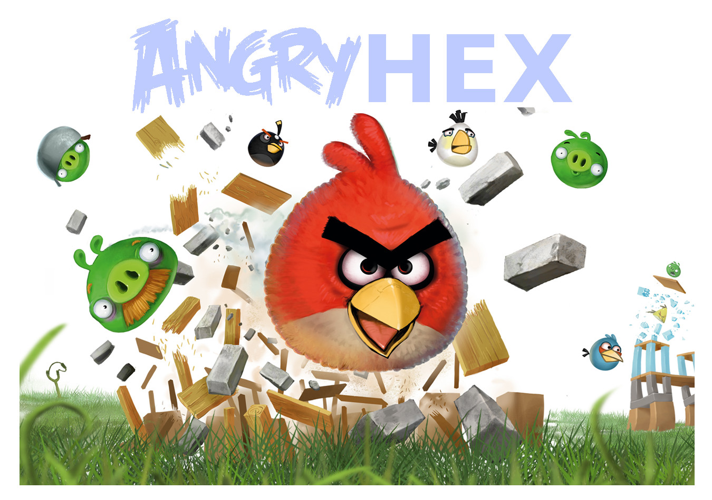
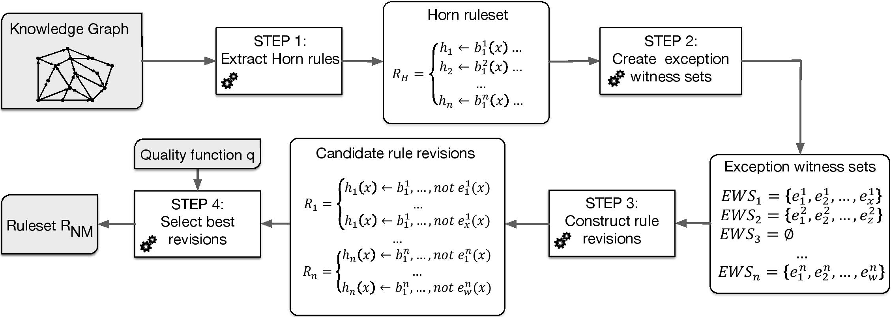
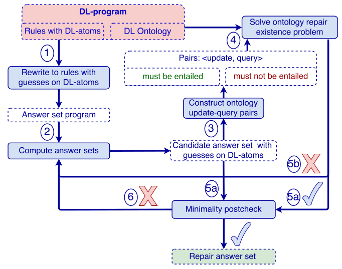

Daria Stepanova is a lead research scientist at Bosch Center for Artificial Intelligence. Her research interests include neuro-symbolic AI, logic programming, as well as reasoning over knowledge graphs. Previously Daria was a senior researcher at Max Plank Institute for Informatics (Germany), where she was heading a group on Semantic Data. Daria got her PhD in Computational Logic from Vienna University of Technology (Austria) in 2015 under the supervision of Prof. Thomas Eiter. Before starting her PhD she worked as a visiting researcher at the school of Computing Science at Newcastle University (UK) in an industrially-oriented project.
|
Nitisha Jain, Tran Kien Trung, Mohamed Gad-Elrab, Daria Stepanova In Proceedings of International Semantic Web Conference (ISWC 2021), p. 410-426, 2021. [paper] |
|
Thomas Eiter, Tobias Geibinger, Nysret Musliu, Johannes Oetsch, Peter Skocovsky, Daria Stepanova In Proceedings of International Conference on Principles of Knowledge Representation and Reasoning (KR 2021), p. 280-290, 2021. [paper] |
|
Medina Andresel, Csaba Domokos, Daria Stepanova, Trung-Kien Tran On arxiv 2106.14052. [paper] |
|
Mohamed H. Gad-Elrab, Daria Stepanova, Trung-Kien Tran, Heike Adel In Proceedings of International Semantic Web Conference (ISWC 2020) p. 218-237, 2020. [paper] |
|
Mohamed Gad-Elrab, Thinh Vinh Ho, Evgeny Levinkov, Tran Kien Trung, Daria Stepanova In Proceedings of International Semantic Web Conference (ISWC 2020 posters), p. 281-286, 2020. [paper] |
|
Po-Wei Wang, Daria Stepanova, Csaba Domokos, Zico Kolter In Proceedings of International Conference on Learning Representations, 2020. [paper] |
|
Sergey Paramonov, Daria Stepanova and Pauli Miettinen In Journal on Theory and Practice of Logic Programming, p. 505-535, 2019. [paper] |
|
Mohamed Gad-Elrab, Daria Stepanova, Jacopo Urbani and Gerhard Weikum. In Proc. 2019 World Wide Web Conference (WWW 2019), p. 3516-3520, 2019. [paper] |
|
Mohamed Gad-Elrab, Daria Stepanova, Jacopo Urbani and Gerhard Weikum. In Proc. ACM International Conf. on Web Search and Data Mining,p. 87-95, 2019. [paper] |
|
Markus Krötzsch and Daria Stepanova In Lecture Notes in Computer Science, 2019. [proceedings|website] |
|
Anees Mehdi, Evgeny Kharlamov, Daria Stepanova, Felix Loesch and Irlan Grangel Gonzalez In ISWC Satellites, p. 303-304, 2019. [paper] |
|
Jannik Strötgen, Trung-Kien Tran, Annemarie Friedrich, Dragan Milchevski, Federico Tomazic, Anika Marusczyk, Heike Adel, Daria Stepanova, Felix Hildebrand and Evgeny Kharlamov In ISWC Satellites, p. 323-324, 2019. [paper] |
|
Thomas Pellissier Tanon, Daria Stepanova, Simon Razniewski, Paramita Mirza, Gerhard Weikum. In Proc. International Joint Conference on Artificial Intelligence (IJCAI 2018), p. 5339-5343, 2018. [paper] |
|
Martin Ringsquandl, Evgeny Kharlamov, Daria Stepanova, Marcel Hildebrandt, Steffen Lamparter, Raffaello Lepratti, Ian Horrocks, and Peer Kröger. In Proc. Extended Semantic Web Conference (ESWC 2018), p. 541-559, 2018. [paper] |
|
Thomas Pellissier Tanon, Daria Stepanova, Simon Razniewski, Paramita Mirza, Gerhard Weikum. In Proc. 16th International Semantic Web Conference (ISWC 2017), p. 507-525, 2017. [paper] (nominated for best student paper award) |
|
Martin Ringsquandl, Steffen Lamparter, Evgeny Kharlamov, Raffaello Lepratti, Daria Stepanova, Peer Kröger, and Ian Horrocks. In Proc. IEEE Big Data Conference 2017, 1676-1681, 2017. [paper] |
|
Francesca A. Lisi and Daria Stepanova. In Proc. 11th International Conference on Rules and Reasoning Systems (RR+Rule-ML 2017), to appear, 2017. [paper] (best poster award) |
|
Sergey Paramonov, Daria Stepanova, Pauli Miettinen. In Proc. 11th International Conference on Rules and Reasoning (RR+Rule-ML 2017), p. 199-214, 2017. [paper] |
|
Hai Dang Tran, Daria Stepanova, Mohamed Gad-elrab, Francesca A. Lisi, Gerhard Weikum. In Post-proc. 26th Inductive Logic Programming Conference (ILP 2016), p. 94-107, 2016. [paper |short paper |slides] |
|
Mohamed Gad-Elrab, Daria Stepanova, Jacopo Urbani, Gerhard Weikum. In Proc. 39th German Conference on Artificial Intelligence (KI 2016), p. 211-217, 2016. [paper] |
|
Mohamed Gad-Elrab, Daria Stepanova, Jacopo Urbani, Gerhard Weikum. In Proc. 15th International Semantic Web Conference (ISWC 2016), p. 234-251, 2016. [paper] |
|
Thomas Eiter, Michael Fink, Daria Stepanova. Journal of Artifitial Intelligence Research (JAIR), p. 463-515, 2016. [paper] |
|
Thomas Eiter, Michael Fink, Daria Stepanova. Journal of Artifitial Intelligence (JAI), p. 7-53, 2016. [paper] |
|
Giovambattista Ianni, Francesco Calimeri, Stefano Germano, Andreas Humenberger, Christoph Redl, Daria Stepanova, Andrea Tucci, and Anton Wimmer. Angry-HEX: an Artificial Player for Angry Birds Based on Declarative Knowledge Bases. IEEE Transactions on Computational Intelligence and AI in Games, p. 128-139, 2016. [paper] |
|
Thomas Eiter, Michael Fink, Daria Stepanova. In DL workshop, p. 169-180, 2014. [ paper] |
|

|
ExCut: Explainable Embedding-based Clustering over KGs |
|

|
ExFact: Explaining facts over Knowledge Graphs and Text |
|

|
RulES: Rule Learning from Knowledge Graphs with Embedding Support |
|

|
CARL: Completeness-aware Rule Learning from Knowledge Graphs |
|

|
Agent for playing AngryBirds game based on declarative programming |
|

|
Exception-enriched Rule Learning from Knowledge Graphs |
|

|
Repair of Inconsistent Description Logic programs |
Rule Induction and Reasoning in Knowledge GraphsOpen Data Science Conference, UK, November, 2019. [slides] |
Rule Induction and Reasoning in Knowledge GraphsReasoning Web Summer School, Luxembourg, September, 2018. [slides] |
Digital Knowledge: From Facts to Rules and BackTalk within Max Planck Lecture Series, Saarbrücken, Germany, May, 2017. [slides] |
Towards Nonmonotonic Rule Learning from Knowledge GraphsInductive Logic Programming Conference (ILP 2016), London, UK, September, 2016. [slides] |
Towards Practical Deletion Repair of Inconsistent DL-programsEuropean Conference on Artificial Intelligence (ECAI 2014), Prague, August, 2014. [slides] |
Towards Practical Deletion Repair of Inconsistent DL-programsDescription Logic Workshop, Vienna, Austria, July, 2014. [slides] |
Data Repair of Inconsistent DL-ProgramsInternation Joint Conference on Artificial Intelligence (IJCAI 2013), Beijing, China, August, 2013. [slides] |
Semantic Independence in DL-programsRules and Reasoning Systems Conference (RR 2012), Vienna, Austria, September, 2012. [slides] |
A Knowledge Base for Justified Information Security Decision-makingInternational Conference on Software and Data Technologies (ICSOFT 2009), Sofia, Bulgary, July, 2009. |
KRSW --- Knowledge Representation for the Semantic Web 2017-2018A master level course on Knowledge Representation for the Semantic Web course at Max Planck Institute for Informatics in winter semester 2018-2019. |
ODSC 2019, 2020, 2021, 2022 --- Rule Induction and Reasoning over Knowledge GrpahsA 1,5-hour tutorial at Open Data Science Conference |
RW 2018 --- Rule Induction and Reasoning over Knowledge GrpahsA 3-hour tutorial at a Reasoning Web summer school [slides]. |
|
Youmna Ismail (2021 - present)
Research area: Neuro-symbolic AI |
|
Mohamed Gad-Elrab (2015 - 2021)
Research areas: Information Extraction and Information Retrieval, Data Mining, Natural Language Processing Topic: Explainable Methods for Knowledge Graph Refinement and Exploration via Symbolic Reasoning [thesis] |
|
Vinh Thinh Ho
Research areas: natural language processing, information retrieval and data mining Topic: An Embedding-based Approach to Rule Learning from Knowledge Graphs [thesis] |
|
Hai Dang Tran
Research areas: knowledge representation and reasoning, rule learning Topic: Non-monotonic rule learning from knowledge graphs [thesis] |
|
Hiba Arnaout
Co-supervised with Trung Kien Tran and Mohamed Gad-Elrab Research areas: Ontological reasoning, language models |
|
Vinh Thinh Ho
Co-supervised with Jannik Stroetgen and Dragan Michelski Research areas: Knowledge Graphs, Natural Language Processing, Information Retrieval Topic: Knowledge Graph Population with Quantity Facts |
|
Nitisha Jain
Co-supervised with Trung Kien Tran Research areas: Ontological Reasoning, Knowledge Graph Embeddings Topic: Improving Knowledge Graph Embeddings with Ontological Reasoning |
|
Sreyasi Nag Chowdhury
Co-supervised with Cory Henson Research areas: Commonsense knowledge graphs Topic: Commonsense Knowledge Graph for Automated Driving |
|
Medina Andresel
Co-supervised with Trung Kien Tran Research areas: Ontology Mediated Query Answering, Knowledge Graph Embeddings Topic: Neuro-symbolic Ontology-mediated Query Answering |
|
Peter Skocovsky
Internship within the collaboration between Bosch Center for AI and TU Vienna Research areas: Answer Set Programming Topic: Answer Set Programming for Industrial Scheduling |
|
Thomas Pellissier Tanon
Research areas: Knowledge Graphs, Natural Language Processing, Information Retrieval Topic: Completeness-aware Rule Learning from Knowledge Graphs |
Many thanks to David Jurgens for the site template/inspiration